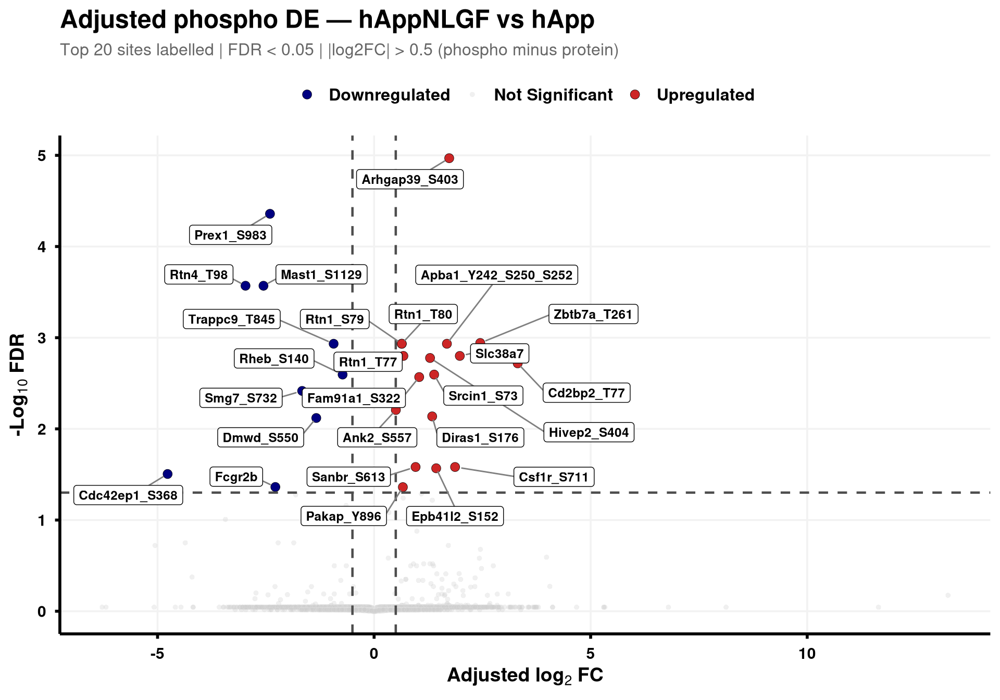
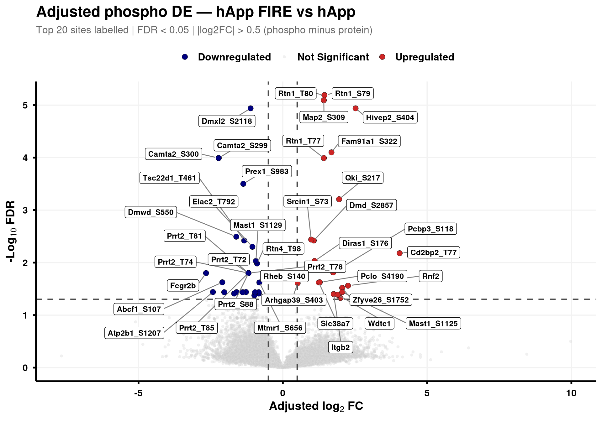
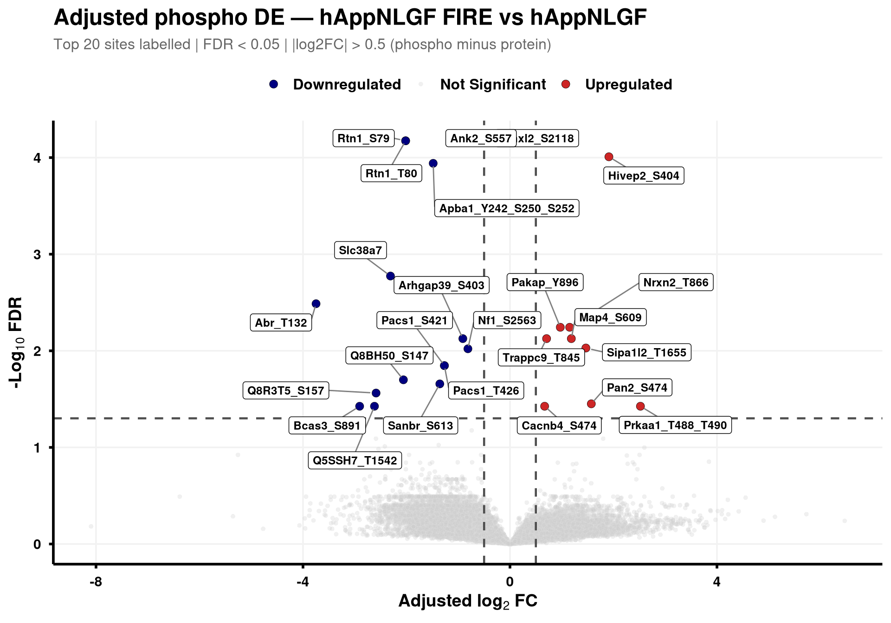
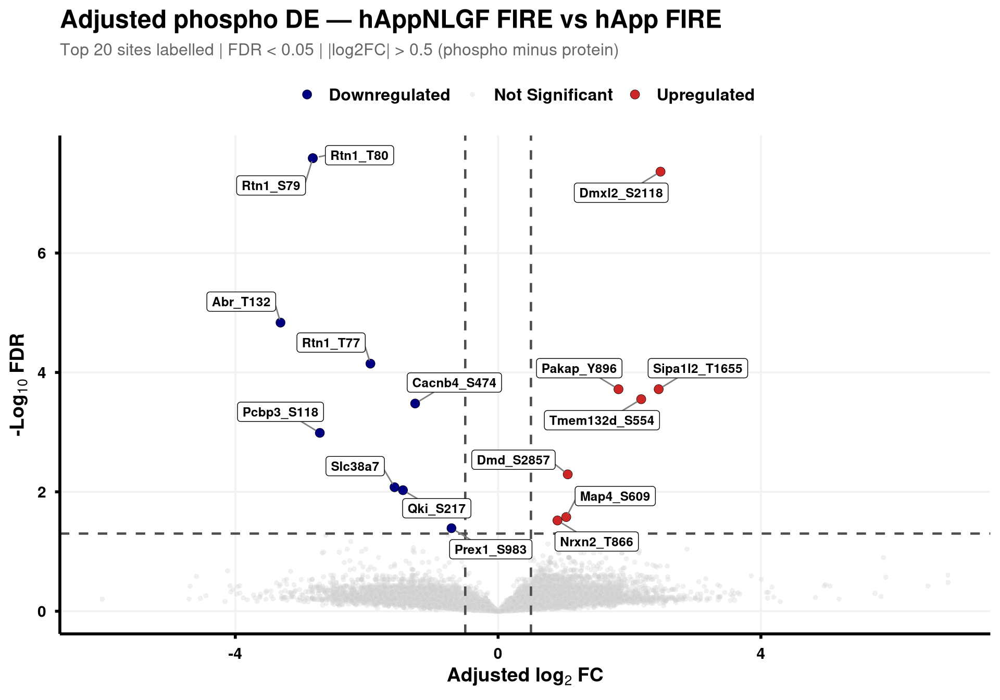
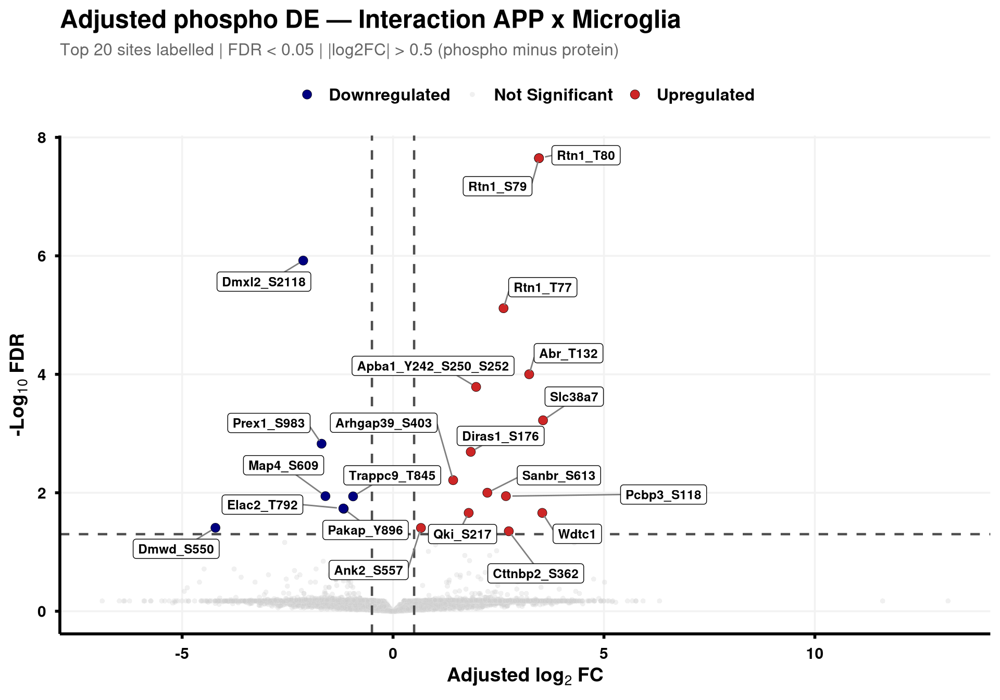

Volcano plots and per-contrast site-level CSVs from the adjusted PTM contrasts in notebook 02. Adjusted log2FC = “phospho minus protein,” i.e. regulation not explained by total protein abundance.
Sites are labelled in Gene_Sxxx format (e.g. Mapt_S202) when the FASTA mapping in notebook 02 succeeded; otherwise the raw protein/peptide identifier is used.
for (cl inunique(res_df$Label)) {print(generate_phospho_volcano(res_df, cl, logfc_cutoff =0.5,graphs_dir = results_dir))}





Quick sanity check — bulk vs phospho concordance
For each contrast, scatter the protein-level log2FC against the unadjusted phospho log2FC at sites whose protein is present in both. Diagonal = abundance-driven. Off-diagonal = phosphorylation-specific regulation.
Code
ptm_unadj <-fread(file.path(results_dir, "PTM_unadjusted_GroupComparison.csv"))prot_res <-fread(file.path(results_dir, "PROTEIN_GroupComparison.csv"))# Map each phospho row's parent accession back to the protein resultptm_unadj[, Accession :=str_extract(Protein, "^[^_;]+")]prot_res[, Accession :=str_extract(Protein, "^[^;]+")]cmp <-merge( ptm_unadj[, .(Label, SiteProtein = Protein, Accession,Phospho_log2FC = log2FC, Phospho_padj = adj.pvalue)], prot_res[, .(Label, Accession,Protein_log2FC = log2FC, Protein_padj = adj.pvalue)],by =c("Label", "Accession"))p_scat <-ggplot(cmp,aes(Protein_log2FC, Phospho_log2FC,color = Phospho_padj <0.05)) +geom_point(alpha =0.5, size =1) +geom_abline(slope =1, intercept =0, linetype ="dashed", color ="grey30") +geom_hline(yintercept =0, linetype ="dotted", color ="grey60") +geom_vline(xintercept =0, linetype ="dotted", color ="grey60") +scale_color_manual(values =c("TRUE"="firebrick3", "FALSE"="grey60"),name ="Phospho FDR < 0.05") +facet_wrap(~ Label, ncol =3, scales ="free") +labs(title ="Phospho vs Protein log2FC per contrast",x ="Protein log2FC (bulk)",y ="Phospho log2FC (unadjusted)") +theme_bw(base_size =11) +theme(legend.position ="top", strip.text =element_text(face ="bold"))print(p_scat)
# 1. Diagnose: how many sites are at the sentinel values?ptm_unadj[, .(.N), by = .(Label, log2FC)][order(-N)][1:20]
Code
# If you see large N at specific extreme values, those are the sentinels.# 2. Flag them explicitly rather than letting them dominate the plotcmp[, imputed_phospho :=abs(Phospho_log2FC) >=quantile(abs(Phospho_log2FC), 0.999, na.rm =TRUE) &duplicated(Phospho_log2FC) |duplicated(Phospho_log2FC, fromLast =TRUE)]# Better: MSstats sets a column `issue` for these. Check it:unique(ptm_unadj$issue)
[1] "" "oneConditionMissing" "completeMissing"
Code
# Look for "oneConditionMissing" or similar — those are your sentinel rows.
Source Code
---title: "3. Phospho — DE volcanoes (adjusted)"---## OverviewVolcano plots and per-contrast site-level CSVs from the adjusted PTM contrasts in notebook 02. Adjusted log2FC = "phospho minus protein," i.e. regulation not explained by total protein abundance.Sites are labelled in `Gene_Sxxx` format (e.g. `Mapt_S202`) when the FASTA mapping in notebook 02 succeeded; otherwise the raw protein/peptide identifier is used.## Libraries```{r setup, include=FALSE, message=FALSE}library(data.table)library(qs2)library(dplyr)library(ggplot2)library(ggrepel)library(stringr)library(AnnotationDbi)library(org.Mm.eg.db)```## Directories```{r}base_dir <-"/nemo/lab/destrooperb/home/shared/zanettc/giulia_proteomics/phosphoproteomics"run_num <-"run1"results_dir <-file.path(base_dir, "results", run_num)objects_dir <-file.path(base_dir, "data", "processed", run_num)dir.create(results_dir, recursive =TRUE, showWarnings =FALSE)```## Load adjusted PTM contrast table```{r load}res_df <- fread(file.path(results_dir, "PTM_adjusted_GroupComparison.csv"))cat("Rows:", nrow(res_df), " Contrasts:", paste(unique(res_df$Label), collapse = ", "), "\n")# MSstatsPTM puts site identifier in `Protein` (e.g. UniProt_S202_T205); split out# the UniProt accession to map to a gene symbol. The exact format depends on the# FASTA-mapping success in notebook 02 — adjust the regex if your sites look# different.res_df[, Accession := str_extract(Protein, "^[^_;]+")]res_df[, Sites_in_id := str_extract(Protein, "(?<=_)[STY][0-9]+(?:_[STY][0-9]+)*")]# Map UniProt accession → gene symbolres_df[, Gene := mapIds( org.Mm.eg.db, keys = Accession, column = "SYMBOL", keytype = "UNIPROT", multiVals = "first")]res_df[, Gene := ifelse(is.na(Gene) | Gene == "", Accession, Gene)]res_df[, SiteLabel := ifelse(is.na(Sites_in_id), Gene, paste0(Gene, "_", Sites_in_id))]```## Volcano helper (mirrors bulk's `generate_swanky_volcano`)```{r volcano_fn}volcano_cols <- c("Upregulated" = "firebrick3", "Downregulated" = "navy", "Not Significant" = "grey80")generate_phospho_volcano <- function(df, comparison_label, logfc_cutoff = 0.5, graphs_dir = results_dir) { v <- df %>% filter(Label == comparison_label, !is.na(adj.pvalue), is.finite(log2FC)) %>% mutate( Status = case_when( adj.pvalue < 0.05 & log2FC > logfc_cutoff ~ "Upregulated", adj.pvalue < 0.05 & log2FC < -logfc_cutoff ~ "Downregulated", TRUE ~ "Not Significant" ) ) %>% group_by(Status) %>% mutate(GroupRank = rank(adj.pvalue, ties.method = "first")) %>% ungroup() %>% mutate(PlotLabel = ifelse(Status != "Not Significant" & GroupRank <= 20, SiteLabel, NA_character_)) p <- ggplot(v, aes(x = log2FC, y = -log10(adj.pvalue), fill = Status, color = Status)) + geom_point(aes(size = Status, alpha = Status), shape = 21, stroke = 0.2) + scale_fill_manual(values = volcano_cols) + scale_color_manual(values = c("Upregulated" = "black", "Downregulated" = "black", "Not Significant" = "grey90")) + scale_size_manual(values = c("Upregulated" = 3, "Downregulated" = 3, "Not Significant" = 1.5)) + scale_alpha_manual(values = c("Upregulated" = 1, "Downregulated" = 1, "Not Significant" = 0.3)) + geom_hline(yintercept = -log10(0.05), linetype = "dashed", color = "grey30", linewidth = 0.8) + geom_vline(xintercept = c(-logfc_cutoff, logfc_cutoff), linetype = "dashed", color = "grey30", linewidth = 0.8) + geom_label_repel(aes(label = PlotLabel), fill = "white", color = "black", fontface = "bold", size = 3.2, box.padding = 0.5, point.padding = 0.5, min.segment.length = 0, segment.color = "grey50", max.overlaps = 50) + labs(title = paste0("Adjusted phospho DE — ", gsub("_", " ", comparison_label)), subtitle = paste0("Top 20 sites labelled | FDR < 0.05 | |log2FC| > ", logfc_cutoff, " (phospho minus protein)"), x = bquote(bold("Adjusted log"[2] ~ "FC")), y = bquote(bold("-Log"[10] ~ "FDR"))) + theme_minimal(base_size = 14) + theme(plot.title = element_text(face = "bold", size = 18, hjust = 0), plot.subtitle = element_text(size = 12, color = "grey40", margin = margin(b = 10)), axis.title = element_text(face = "bold", size = 14), axis.text = element_text(face = "bold", color = "black"), axis.line = element_line(color = "black", linewidth = 1), axis.ticks = element_line(color = "black", linewidth = 1), legend.position = "top", legend.title = element_blank(), legend.text = element_text(size = 12, face = "bold"), panel.grid.minor = element_blank(), panel.grid.major = element_line(color = "grey95")) safe <- gsub(" ", "_", comparison_label) ggsave(file.path(graphs_dir, paste0("PhosphoVolcano_", safe, ".pdf")), p, width = 10, height = 7, dpi = 300, device = cairo_pdf) fwrite(v %>% dplyr::select(SiteLabel, Gene, Accession, Sites_in_id, log2FC, pvalue, adj.pvalue, Status) %>% arrange(adj.pvalue), file.path(graphs_dir, paste0("PhosphoVolcano_Data_", safe, ".csv"))) p}```## Iterate through contrasts```{r run_volcanoes, fig.width=10, fig.height=7}for (cl in unique(res_df$Label)) { print(generate_phospho_volcano(res_df, cl, logfc_cutoff = 0.5, graphs_dir = results_dir))}```## Quick sanity check — bulk vs phospho concordanceFor each contrast, scatter the protein-level log2FC against the unadjusted phospho log2FC at sites whose protein is present in both. Diagonal = abundance-driven. Off-diagonal = phosphorylation-specific regulation.```{r concordance, fig.width=10, fig.height=8}ptm_unadj <- fread(file.path(results_dir, "PTM_unadjusted_GroupComparison.csv"))prot_res <- fread(file.path(results_dir, "PROTEIN_GroupComparison.csv"))# Map each phospho row's parent accession back to the protein resultptm_unadj[, Accession := str_extract(Protein, "^[^_;]+")]prot_res[, Accession := str_extract(Protein, "^[^;]+")]cmp <- merge( ptm_unadj[, .(Label, SiteProtein = Protein, Accession, Phospho_log2FC = log2FC, Phospho_padj = adj.pvalue)], prot_res[, .(Label, Accession, Protein_log2FC = log2FC, Protein_padj = adj.pvalue)], by = c("Label", "Accession"))p_scat <- ggplot(cmp, aes(Protein_log2FC, Phospho_log2FC, color = Phospho_padj < 0.05)) + geom_point(alpha = 0.5, size = 1) + geom_abline(slope = 1, intercept = 0, linetype = "dashed", color = "grey30") + geom_hline(yintercept = 0, linetype = "dotted", color = "grey60") + geom_vline(xintercept = 0, linetype = "dotted", color = "grey60") + scale_color_manual(values = c("TRUE" = "firebrick3", "FALSE" = "grey60"), name = "Phospho FDR < 0.05") + facet_wrap(~ Label, ncol = 3, scales = "free") + labs(title = "Phospho vs Protein log2FC per contrast", x = "Protein log2FC (bulk)", y = "Phospho log2FC (unadjusted)") + theme_bw(base_size = 11) + theme(legend.position = "top", strip.text = element_text(face = "bold"))print(p_scat)ggsave(file.path(results_dir, "Phospho_vs_Protein_log2FC_scatter.pdf"), p_scat, width = 12, height = 8, device = cairo_pdf)``````{r}# 1. Diagnose: how many sites are at the sentinel values?ptm_unadj[, .(.N), by = .(Label, log2FC)][order(-N)][1:20]# If you see large N at specific extreme values, those are the sentinels.# 2. Flag them explicitly rather than letting them dominate the plotcmp[, imputed_phospho :=abs(Phospho_log2FC) >=quantile(abs(Phospho_log2FC), 0.999, na.rm =TRUE) &duplicated(Phospho_log2FC) |duplicated(Phospho_log2FC, fromLast =TRUE)]# Better: MSstats sets a column `issue` for these. Check it:unique(ptm_unadj$issue)# Look for "oneConditionMissing" or similar — those are your sentinel rows.```